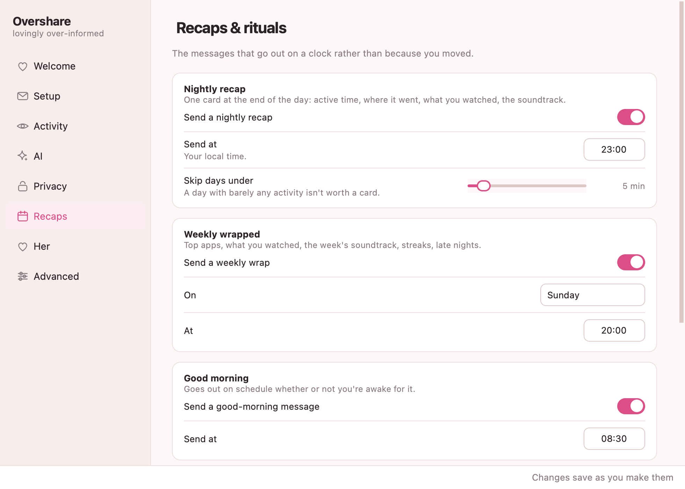
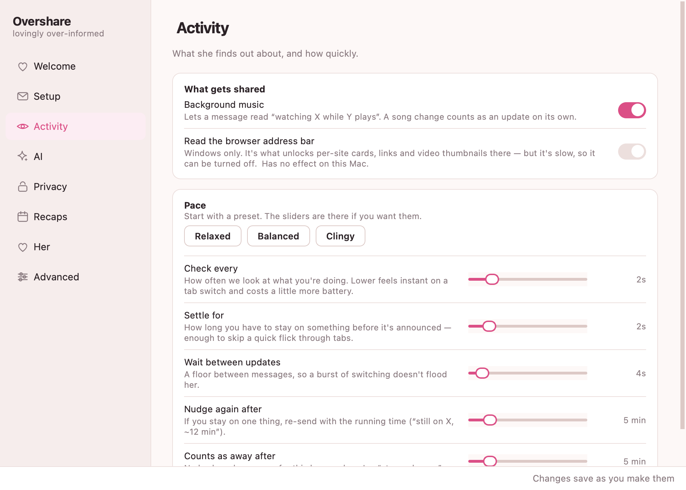

Tell her everything.
Without typing a word.
A tiny menu-bar app that watches what you're doing and sends your partner a warm little update about it — in real time, in detail, so you don't have to.

Paste one link. It checks it for you. That's the setup.
You're already doing things.
She just never hears about them.
Overshare sits in your menu bar and does the telling for you. It sees what's in front of you, turns it into a sentence worth reading, and sends it on.
01
It notices
The app you're in, the file you're editing, the tab you're reading, the song playing behind it — and the moment you wander off.
02
It writes
A warm one-liner, not a log entry. Free cloud AI, a model running on your own machine, or plain templates with no AI at all.
03
She gets it
A rich card in Discord or Telegram, with links and thumbnails. She can reply, react, and ask for a photo — and you're told every time.
Everything has a dial.
Seven pages, and the window checks its own work. Changes apply while the app is running — nothing needs restarting.
Pick a brain, or none at all
The one-liners can be written by a free cloud model, one running locally on your own machine, or nothing at all.
- Paste a key and it's verified before you leave the field
- The model list comes from your own account, not a hardcoded menu
- Ollama runs offline — your activity never leaves the computer
- Turn AI off entirely and it still works, just plainer

Some things are nobody's business
This app reads your screen, so it ships knowing what not to look at. Password managers and private windows are hidden out of the box.
- Incognito and private windows, on every major browser
- Any app, site, or word you add yourself
- Hidden activity is kept out of the recaps too, so it can't resurface there later
- One switch pauses the whole app from the menu bar

A nightly recap and a weekly wrapped
Where the day went, what you watched, the soundtrack, the late nights — summarised and sent on a schedule you set.
- Top apps, most-watched, tracks on repeat, streaks
- Good-morning and goodnight bookends
- Missed one because the machine was off? It sends when you're back

As clingy as you want it
Start with a preset and never think about it again, or take the sliders apart until the pace is exactly right.
- Relaxed, Balanced, or Clingy in one click
- How often it looks, how long before it announces, how quiet is “away”
- A heartbeat that says “still on this, ~12 min”

Three steps, about two minutes.
No terminal, no Python, no config files to edit.
Install it
Download and drag it to Applications, or run the Windows installer. The first launch needs a right-click → Open on macOS, or More info → Run anyway on Windows — it isn't signed by a paid developer account.
Paste one link
Click the 💌 in your menu bar → Settings… In Discord: right-click a channel → Edit Channel → Integrations → Webhooks → Copy Webhook URL. Paste it. It goes green when it works.
That's it
It starts telling her straight away. Everything else — the AI, the recaps, what's off-limits — is optional and already has a sensible default.
Nowhere near us.
There's no account, no server of ours in the middle, and nothing to sign up for. It talks to your chat app and nothing else.
It stays on your machine
Settings and history live in one folder on this computer. Delete it and nothing of you remains.
You choose the blocklist
Password managers and private windows are hidden by default. Add whatever else you'd rather keep to yourself.
Off whenever you like
One click in the menu bar pauses everything. She's told the updates stopped, not what you were doing.
The small stuff that makes it.
- Per-site smarts — YouTube, Twitch, Reddit, GitHub and friends get their own emoji, colour and phrasing.
- Now playing — “watching X while Y plays”, even when Spotify's in the background.
- Watch and listen along — she gets a link straight to whatever you're on.
- Peek on demand — she can ask for a webcam photo or a screenshot, and you're pinged every time.
- Two-way — with a bot, her replies and reactions come back to you as notifications.
- Tone presets — cutesy, chill, or detailed. She picks.
- Discord and Telegram — either, or both at once.
- Light and dark — follows your system, or pin it.
Fair enough.
Does she need to install anything?
No. She just needs Discord or Telegram, which she probably already has. Everything runs on your computer.
Is this… a bit much?
Yes. That's the point. It started because someone said “you never tell me anything”, and it's meant to be used by two people who both think it's funny. There's a pause button and a blocklist for the moments you don't.
Does it cost anything?
No. The app is free and the AI can be too — Groq gives out free keys, and Ollama runs on your own machine at no cost. Only Claude bills you, and it's optional.
Why does macOS say it can't verify the app?
Because it isn't signed by a paid Apple developer account, which costs $99 a year. Right-click the app and choose Open once and macOS remembers. On Windows it's More info → Run anyway.
Can she see my bank details?
Not by default. Password managers and private windows are hidden out of the box, and you can add any app, site or word to the blocklist. Hidden activity is kept out of the recaps too.
Will it slow my computer down?
No. It reads a couple of window titles every few seconds. You can make it check less often on the Activity page if you'd rather.